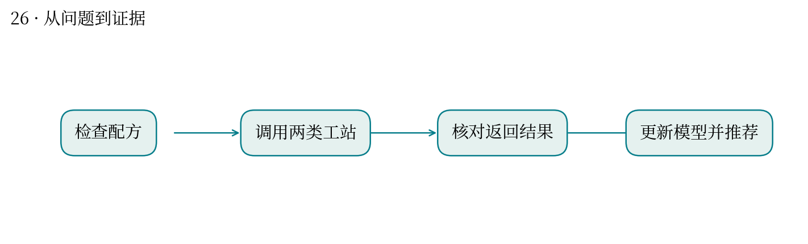
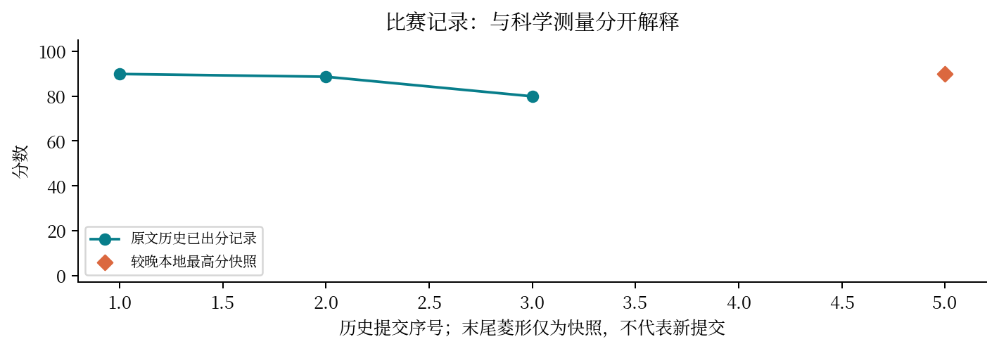

让 AI 设计配方后，怎样确保实验真的执行并正确回流？
最高分快照：89.86 · 2026-10-12T01:11:24+08:00
自主实验把模型决策、配液、电导率测量与扣电测试连成闭环。协议错误会污染后续学习。
接入 TCP 与 HTTP 模拟工站，构建配方描述符、约束检查和迭代优化，另做故障注入及独立验证。
历史记录包含 37 轮探索，group CV Spearman 约 0.9238；较晚快照为 89.86。模拟工站结果不能当成真实实验室验证。
断线重试可能导致重复实验；单位、配方总量、响应归属和训练数据回流必须一致。
与你的 SciFusion 测评闭环相似：生成任务、执行、采集结果、诊断、再调整。实验设备的状态与失败恢复要求更严格。
较高 CV 相关性不证明推荐配方实际最优；应独立报告协议可靠性和模型优化收益。


| attempt | 提交时间 | 分数 | 状态 |
|---|---|---|---|
| 51899 | 10-11 00:10:56 | 89.8591 | 已出分 |
| 52290 | 10-11 01:47:21 | 88.6409 | 已出分 |
| 53606 | 10-11 10:42:04 | 79.8953 | 已出分 |
| 55881 | 10-11 19:38:46 | — | 失败 |
源文件 SHA256 见 证据清单；用 scripts/build.py 重建图表。